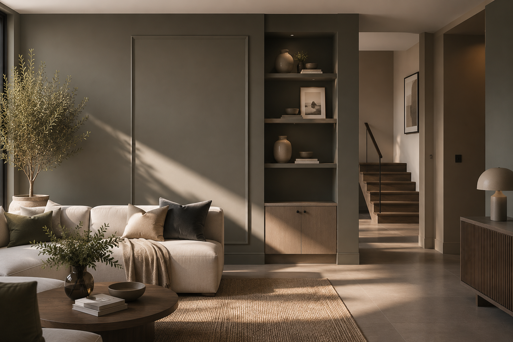

01
Interior Walls & Ceilings
Washable, low-odour finishes suited to daily living, applied evenly across every wall and ceiling.

Interior walls, ceilings, doors and frames — painted with careful preparation and premium materials, so the finish still looks right years after the last coat dried.
SCROLL

Amigos Maler handles interior walls, ceilings, doors and frames from first inspection to final coat — with the surface preparation most companies skip, and the materials that make the difference show.
Paint alone does not create a premium surface. The difference comes from preparation, materials and professional execution.
 BEFORE
BEFORE
 AFTER
AFTER
Walls, ceilings and woodwork, all handled by the same crew for a consistent finish throughout.
Washable, low-odour finishes suited to daily living, applied evenly across every wall and ceiling.

Detail work that's easy to overlook and impossible to miss when it's done well.

Bring tired rooms back to life without a full renovation.

Accent walls and textured finishes, applied with the same precision as a full repaint.

Durable, washable topcoats matched to the room — from bathrooms to living spaces.
Most paint failures trace back to skipped prep — not the paint itself. We treat every surface the same way, every time.
Covering & protection of floors, fixtures and furniture
Cleaning and degreasing every surface before touching a brush
Sanding for a smooth, even base coat adhesion
Filling and repairing cracks, holes and imperfections
Hover or tap a swatch to preview it — helpful for narrowing down a shortlist before your consultation.
A straightforward process — no surprises on price, timeline, or what's included.
We listen to what you want the space to feel like, and scope the work in detail.
Surfaces, existing paint and any repairs needed are assessed on-site.
A clear, itemised offer — materials, timeline and cost, no hidden extras.
Covering, cleaning, sanding and filling — done properly before any paint goes on.
Coats applied to spec, with premium materials matched to each room.
We walk the finished space with you before calling the job done.
Prep Every Single Time — No Skipped Steps
Materials Chosen For The Room, Not The Cheapest Option
Execution With Full Protection Of Your Space
Communication From Quote To Final Walkthrough

A well-maintained interior protects surfaces, extends the life of fixtures, and keeps a property looking cared for. Interior painting is one part of a bigger picture — see how it fits into ongoing property value preservation.
Get a free, no-obligation quote — most estimates are turned around within 48 hours.
Request Your Free Quote